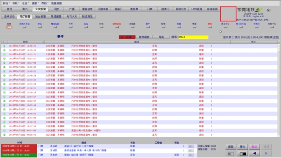

综合监控工作站处CCTV小窗口消失或图像无法正常显示需要对CCTV程序进行重启
此指引可能需要在服务器上进行相关操作，故需严格按本指引操作步骤操作
综合监控系统工作站
4.1CCTV系统中IP地址分类
每个摄像头都有分配有一个独立的ip地址，如10.21.Cxx.Dxx，其中：
10.21 |
为服务器IP字段，各站都一样； |
Cxx |
为车站地址，100代表东莞火车站，101代表茶山站…114代表虎门火车站，其中115代表车辆段SOCC； |
Dxx |
为车站级的第几个摄像头，其中188代表为该站点CCTV服务器管理口，如下图 |
示例：
天宝站第004号摄像头的IP是10.21.104.004
天宝站CCTV服务器管理口的IP为10.21.104.188
车辆段CCTV服务器管理口IP为10.21.115.188
4.2故障处理
在处理CCTV故障时可首先ping 故障站的服务器管理口IP及摄像头IP地址，以确认物理链路是否正常的。
4.2.1重启工作站视频小窗口程序
①关闭CCCTV窗口程序
正常状态下如下图工作站界面红色框内应显示CCTV视频小窗口。

故障后，可打开终端输入ps -ef | grep vMonitor并按回车，显示如下图：
②使用sudo kill xx命令杀掉对应程序进程，其中xx为上图红色框内的进程号，如sudo kill 3257 3306 18449 22592 24645 27679
在工作站终端处输入指令：“cd /opt/vMonitor/”进入目录
执行：“./vMonitor.sh &”，其中&代表程序在后台运行，回车，右上角即弹出视频小窗口。
注意：在弹出窗口后，要点选回命令窗口按回车键，出现[1]+ 完成才算后台运行成功，如下图所示：
4.2.2重启服务器上CCTV程序
以天宝站为例：
在工作站处登录故障所在车站中任意一个综合监控服务器
①执行查询指令：ps–ef| grep cctv，显示如下图所示：
②使用kill命令关闭进程，如4.2.1工作站处操作类似。
③打开服务器CCTV进程
在终端输入指令：“cd /etc/rc2.d/”，进入目录
执行：“./S80cctvProxy”
④在另一台服务器上重复①-③操作。